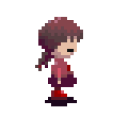

I meant Javascript, not C++!
I've decided to modify the 999qrcodes project to be more… realistic. It took me a while to get to where I am with HTML and CSS (and even then I'd barely consider myself an amateur), so why should I assume that I could learn the basics of a new coding language every week? I just don't want to make it too hard on myself. However, I still want to pursue some sort of project to improve my skills.
So, here is my new proposal: 9 Weeks, 9 Projects, 9 Features. Instead of studying different languages every week, I figured it would be better if I continued to study the ones I'm already somewhat familiar with (HTML, CSS) and develop more of that frontend knowledge with Javascript, which I know very little about. It's definitely less stressful that way, and in the end, this site benefits as well.
With that being said, it's the last day of the first week, and the first project is done! I created this QR code generator. It was a simple and straightforward project that I think is a great starting point. I feel like it's going to take a while for me to grow comfortable with Javascript's syntax, but that's the whole point of this! I was not only super busy but also very ill this entire week, so I'm grateful that I was able to get this out against all odds. See you next week!
